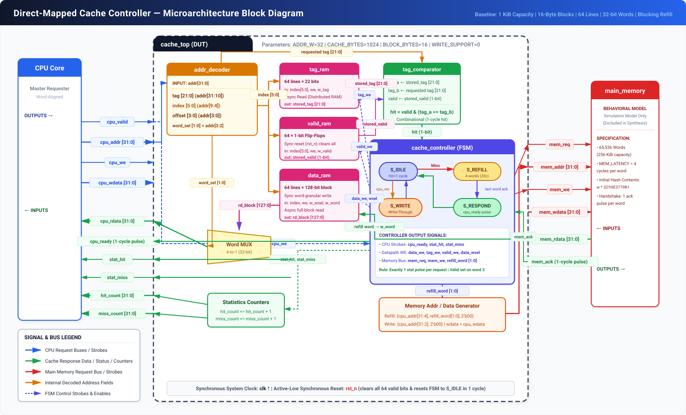
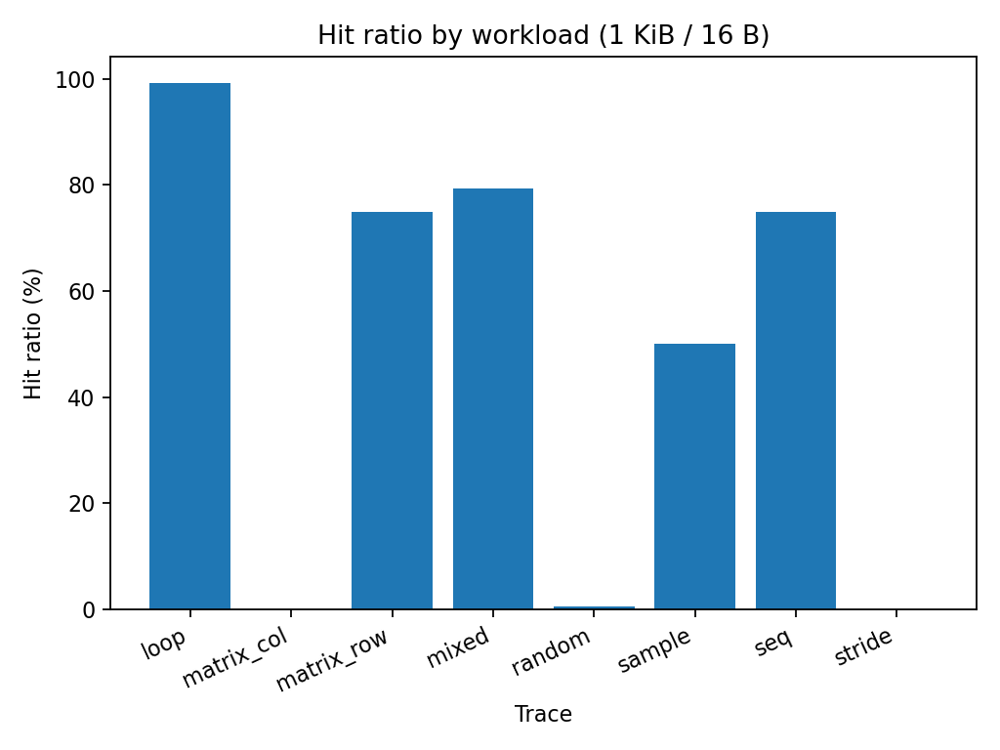
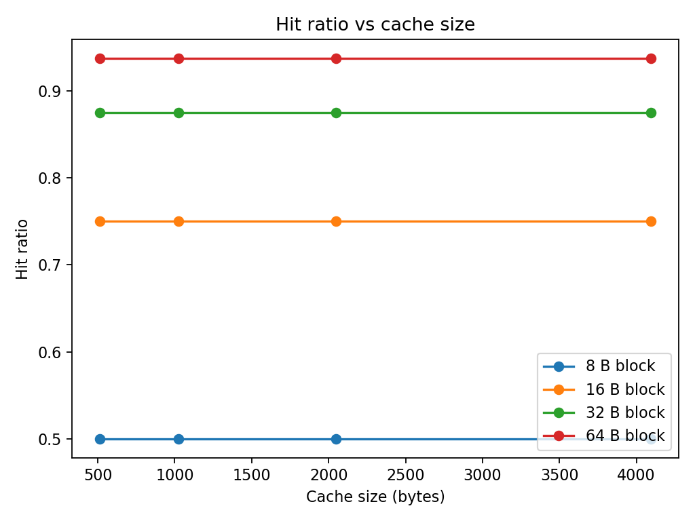
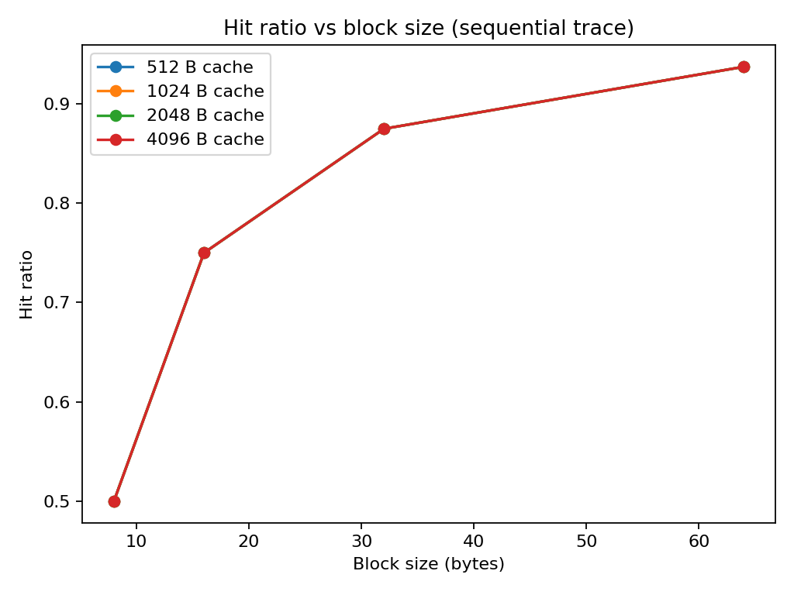
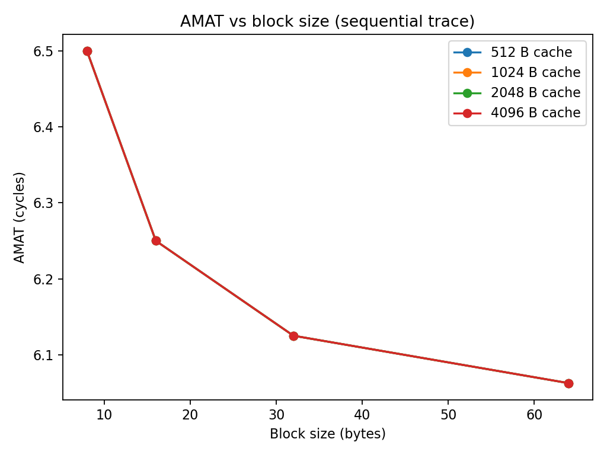

Course: MCA Capstone Project — Computer Architecture
Team Members: - M1 — Architect, Controller FSM, Top Integration - M2 — Storage Datapath - M3 — Narendra Singh — Main Memory Interface, Synthesis - M4 — Verification - M5 — Traces, Analysis, Report
Date: November 2026
This report presents the design, implementation, verification, and architectural evaluation of a parameterized direct-mapped cache controller implemented in synthesizable Verilog. The cache hierarchy sits between a CPU issuing 32-bit word-aligned memory requests and a behavioural main-memory model with configurable latency. The baseline configuration employs a 1 KiB cache with 16-byte blocks, yielding 64 cache lines, a 22-bit tag, 6-bit index, and 4-bit block offset. The controller FSM achieves a one-cycle hit time through Mealy outputs and asynchronous RAM reads, and services misses via a four-word sequential refill handshake with the memory, incurring a 22-cycle miss latency for the default memory latency of four cycles. Verification is performed through a 10-case directed self-checking testbench targeting reset behaviour, spatial and temporal locality, conflict misses, stale data, counters, and cycle-accurate latencies, complemented by trace-driven co-simulation against a bit-accurate Python golden reference model. Fault injection confirms that all three deliberately introduced RTL mutations are detected. Seven deterministic memory-access traces—sequential, uniform random, repeated loop, phased stride, row-major matrix, column-major matrix, and mixed workload—exercise spatial locality, temporal locality, capacity pressure, and direct-mapped conflict behaviour. Performance analysis yields hit ratios ranging from 0% (column-major, stride) to 99.22% (loop), with AMAT values from 1.164 to 22.000 cycles. A parameter sweep across cache sizes (512 B–4 KiB) and block sizes (8–64 B) quantifies the cache-size vs. hit-ratio and block-size vs. AMAT tradeoffs. Synthesis via Yosys targets generic gates, Xilinx 7-series, and Lattice iCE40, demonstrating that the data RAM dominates area (82.2% of generic cells at the baseline) and that asynchronous reads preclude block RAM mapping, a deliberate design choice for one-cycle hit time. Timing analysis on iCE40 HX8K with a registered-input block-RAM variant reports 83–89 MHz.
Modern processors execute instructions at rates that far exceed the access time of main memory. A single DRAM access may take tens to hundreds of processor clock cycles, creating a severe performance bottleneck known as the processor–memory gap. The memory hierarchy—a series of progressively larger and slower storage levels—exploits the principle of locality to bridge this gap. Caches, positioned between the processor and main memory, store recently accessed data in fast SRAM or register-based storage, providing the illusion of a memory that is simultaneously large and fast.
The effectiveness of caching rests on two fundamental properties of program behaviour:
A well-designed cache captures both forms of locality: temporal locality is served by keeping recently accessed blocks resident, and spatial locality is exploited by fetching multi-word blocks on each miss, so that neighbouring words are already present for subsequent accesses.
This capstone project implements a direct-mapped cache controller in Verilog and evaluates its cache hit/miss behaviour using representative memory-access traces. The design targets the following objectives:
The baseline configuration uses a 1 KiB cache with 16-byte blocks and read-only operation. Write-through with no-write-allocate is implemented as an optional stretch feature behind a compile-time parameter.
The system architecture is illustrated in the block diagram below.
The CPU interface connects to cache_top, which internally
instantiates the address decoder, three storage RAMs, the tag
comparator, and the cache controller FSM. The main memory model is
external to cache_top and is connected through the
memory-side handshake interface.

testbench
├── cache_top
│ ├── addr_decoder — splits cpu_addr into tag / index / offset / word_sel
│ ├── tag_ram — stores the tag of the block in each cache line
│ ├── valid_ram — one valid bit per line, synchronous reset clears all
│ ├── data_ram — holds cached data blocks, word-granular writes
│ ├── tag_comparator — hit = valid & (stored_tag == request_tag)
│ └── cache_controller — FSM: IDLE, REFILL, RESPOND, WRITE
└── main_memory — behavioural simulation model (not synthesised)cache_top)All signals follow the interface contract frozen on Day 1 of the project (plan.md §4.1).
| Signal | Direction | Width | Description |
|---|---|---|---|
clk |
in | 1 | System clock |
rst_n |
in | 1 | Active-low synchronous reset. Clears all valid bits on assertion |
cpu_valid |
in | 1 | Request valid. cpu_addr, cpu_we,
cpu_wdata are stable until cpu_ready |
cpu_we |
in | 1 | 0 = read, 1 = write (baseline: always 0) |
cpu_addr |
in | 32 | Byte address (word-aligned; addr[1:0] ignored) |
cpu_wdata |
in | 32 | Write data (stretch goal only) |
cpu_rdata |
out | 32 | Read data, valid in the cpu_ready = 1 cycle |
cpu_ready |
out | 1 | Request complete — one-cycle pulse |
stat_hit |
out | 1 | One-cycle pulse when the request is classified as a hit |
stat_miss |
out | 1 | One-cycle pulse when the request is classified as a miss |
hit_count |
out | 32 | Running counter of hits since reset |
miss_count |
out | 32 | Running counter of misses since reset |
Rule: For every request, exactly one of
stat_hit or stat_miss pulses. The refill’s
internal re-lookup does not generate a second pulse.
cache_top ↔︎ main_memory)Word-by-word handshake protocol (plan.md §4.2):
| Signal | Direction (cache view) | Width | Description |
|---|---|---|---|
mem_req |
out | 1 | Request active; held high with mem_addr stable until
mem_ack |
mem_we |
out | 1 | 0 = read, 1 = write (stretch: write-through) |
mem_addr |
out | 32 | Word-aligned byte address |
mem_wdata |
out | 32 | Write data (stretch goal) |
mem_rdata |
in | 32 | Read data, valid in the mem_ack = 1 cycle |
mem_ack |
in | 1 | One-cycle pulse, arriving MEM_LATENCY cycles after
request |
On a miss, the controller issues requests for all words of the block
starting from the block-aligned base address: addr,
addr+4, addr+8, addr+12 (for a
16-byte block).
addr_decoder : in addr[31:0]
out tag[TAG_W-1:0], index[INDEX_W-1:0],
offset[OFF_W-1:0], word_sel[WSEL_W-1:0]
tag_ram : clk, index (read) → tag_out // async read, sync write
we, w_index, w_tag
valid_ram : clk, rst_n, index (read) → valid_out // reset clears all, async read
we, w_index, w_valid
data_ram : clk, index → rd_block[BLOCK_BITS-1:0] // async read, full block
we, w_index, w_word_sel, w_word[31:0] // word-granular sync write
tag_comparator : in tag_a, tag_b, valid → out hit // hit = valid & (tag_a == tag_b)| Parameter | Default | Description |
|---|---|---|
ADDR_W |
32 | Address width in bits |
CACHE_BYTES |
1024 | Total cache capacity |
BLOCK_BYTES |
16 | Bytes per cache block |
WRITE_SUPPORT |
0 | 0 = read-only, 1 = write-through + no-write-allocate |
MEM_LATENCY |
4 | Main memory access latency in cycles (≥1) |
MEM_WORDS |
65536 | Main memory size in 32-bit words (256 KiB) |
All modules are fully parameterized using $clog2 for
derived widths; no hard-coded constants appear in any RTL file.
For a direct-mapped cache with CACHE_BYTES capacity and
BLOCK_BYTES-wide blocks, the 32-bit byte address is
partitioned into three fields:
31 10 9 4 3 0
+-----------------------------+------------+----------+
| tag (22 bits) | index (6) | offset(4)|
+-----------------------------+------------+----------+
\_ [3:2] = word_sel (which 32-bit word)
[1:0] = byte in word (ignored)Formulas:
NUM_LINES = CACHE_BYTES / BLOCK_BYTES = 1024 / 16 = 64
OFF_W = log₂(BLOCK_BYTES) = log₂(16) = 4
INDEX_W = log₂(NUM_LINES) = log₂(64) = 6
TAG_W = ADDR_W − INDEX_W − OFF_W = 32 − 6 − 4 = 22
WORDS/BLK = BLOCK_BYTES / 4 = 16 / 4 = 4
WSEL_W = OFF_W − 2 = 4 − 2 = 2The offset selects a byte within the block;
word_sel = addr[3:2] selects which 32-bit word. The index
selects one of 64 cache lines. The tag identifies which memory block
currently occupies that line. Since
OFF_W + INDEX_W = log₂(CACHE_BYTES), the tag is simply
addr >> log₂(CACHE_BYTES). Two addresses exactly
CACHE_BYTES (1 KiB) apart always have the same index and
different tags—the conflict-miss condition.
| CACHE_BYTES | BLOCK_BYTES | Lines | OFF_W | INDEX_W | TAG_W | Words/blk |
|---|---|---|---|---|---|---|
| 512 | 8 | 64 | 3 | 6 | 23 | 2 |
| 512 | 16 | 32 | 4 | 5 | 23 | 4 |
| 1024 | 8 | 128 | 3 | 7 | 22 | 2 |
| 1024 | 16 | 64 | 4 | 6 | 22 | 4 |
| 1024 | 32 | 32 | 5 | 5 | 22 | 8 |
| 1024 | 64 | 16 | 6 | 4 | 22 | 16 |
| 2048 | 16 | 128 | 4 | 7 | 21 | 4 |
| 4096 | 16 | 256 | 4 | 8 | 20 | 4 |
| 4096 | 64 | 64 | 6 | 6 | 20 | 16 |
Rules of thumb: - Bigger block → offset grows, index
shrinks (fewer lines), tag unchanged. More spatial exploitation but
longer miss penalty and more potential conflicts. - Bigger cache → index
grows, tag shrinks. Fewer evictions but more storage area. - Tag
overhead per line = (TAG_W + 1) / (BLOCK_BYTES × 8). Base
config: 23 / 128 ≈ 18%.
Address 0x00001A2C =
0000_0000_0000_0000_0001_1010_0010_1100₂
| Field | Bits | Value |
|---|---|---|
| Tag | [31:10] | 0x6 (00_0000_0000_0000_0000_0110) |
| Index | [9:4] | 0x22 = 34 (100010) |
| Offset | [3:0] | 0xC = 12 (1100) |
word_sel |
[3:2] | 3 |
| Block base address | addr with offset zeroed | 0x00001A20 |
Verification: 0x1A2C >> 10 = 6,
(0x1A2C >> 4) & 0x3F = 0x1A2 & 0x3F = 0x22,
0x1A2C & 0xF = 0xC. ✓
0x1A2C. Index = 34. valid[34] = 0
after reset → MISS (even if tag RAM happens to hold
6).0x1A20,
0x1A24, 0x1A28, 0x1A2C.tag_ram[34] = 6 and valid[34] = 1 are
written together with the last word.0x1A2C).Request 0x00001A28 immediately after Example A: tag = 6,
index = 34, offset = 8, word_sel = 2.
valid[34] = 1 and stored tag 6 equals request tag 6 →
HIT, answered in one cycle. The same applies to
0x1A20 and 0x1A24: one miss brought in all
four words.
Request 0x00001E2C (= 0x1A2C + 0x400): tag
= 7, index = 34, offset = 12. Line 34 is valid, but stored tag is 6, not
7 → MISS. The line is refilled with block
0x1E20..0x1E2C and tag 7 replaces tag 6. A subsequent
access to 0x1A2C misses again (tag 6 was evicted).
Alternating between these two addresses produces 100% misses—the
ping-pong pathology of direct-mapped caches.
stateDiagram-v2
[*] --> IDLE : reset
IDLE --> IDLE : no request, or read hit (cpu_ready=1, stat_hit)
IDLE --> REFILL : read miss (stat_miss)
IDLE --> WRITE : write (only if WRITE_SUPPORT=1)
REFILL --> REFILL : mem_ack and not last word (word_cnt+1)
REFILL --> RESPOND : mem_ack and last word (tag+valid written)
RESPOND --> IDLE : cpu_ready=1
WRITE --> WRITE : waiting for mem_ack
WRITE --> IDLE : mem_ack (cpu_ready=1)| State | Purpose |
|---|---|
| IDLE | Tag compare is combinational, so a hit can be answered in the same
cycle. A miss is detected and counted here (stat_miss
pulse), then the FSM transitions out, preventing double-counting. |
| REFILL | Main memory returns one word per
mem_req/mem_ack handshake. A loop of W
handshakes (word_cnt 0..W−1) fills the entire block. |
| RESPOND | Data and tag/valid are written at the clock edge after the last ack.
data_ram is read asynchronously, so one cycle later the
requested word can be delivered. cpu_ready is asserted
here, with no stat pulse. |
| WRITE | Only active when WRITE_SUPPORT=1: write-through to
memory, waiting for ack. |
hit = valid AND tag match for the current
cpu_addr. last =
word_cnt == WORDS_PER_BLOCK − 1.
| State | Condition | Outputs (all others 0) | Next State |
|---|---|---|---|
| IDLE | !cpu_valid |
— | IDLE |
| IDLE | cpu_valid & hit & !is_write |
stat_hit, cpu_ready |
IDLE |
| IDLE | cpu_valid & !hit & !is_write |
stat_miss |
REFILL |
| IDLE | cpu_valid & hit & is_write (WS=1) |
stat_hit, data_we (cpu data) |
WRITE |
| IDLE | cpu_valid & !hit & is_write (WS=1) |
stat_miss (no allocate) |
WRITE |
| REFILL | !mem_ack |
mem_req, data_wsel=word_cnt |
REFILL |
| REFILL | mem_ack & !last |
mem_req, data_we (word
word_cnt) |
REFILL, word_cnt+1 |
| REFILL | mem_ack & last |
mem_req, data_we, tag_we,
valid_we |
RESPOND |
| RESPOND | always | cpu_ready |
IDLE |
| WRITE | !mem_ack |
mem_req, mem_we |
WRITE |
| WRITE | mem_ack |
mem_req, mem_we,
cpu_ready |
IDLE |
is_write = (WRITE_SUPPORT != 0) && cpu_we. With
WRITE_SUPPORT=0, a request with cpu_we=1 is
handled as a read.
The controller uses Mealy outputs:
cpu_ready, stat_hit, and
stat_miss depend on inputs (cpu_valid,
hit, mem_ack) in the same cycle. This is
necessary for the one-cycle hit requirement—a Moore FSM would register
the hit result first and add one cycle to every hit. There is no
combinational loop because hit is derived from RAMs and the
comparator, which are not driven by any output of the controller in the
same cycle.
Configuration: MEM_LATENCY = 4, request address
0x1A2C.
| Cycle | State | mem_req |
mem_ack |
mem_addr |
Events |
|---|---|---|---|---|---|
| 0 | IDLE | 0 | 0 | — | Request arrives, tag compare fails: stat_miss
pulse |
| 1 | REFILL | 1 | 0 | 0x1A20 |
Word 0 requested |
| 2–4 | REFILL | 1 | 0 | 0x1A20 |
Waiting for memory |
| 5 | REFILL | 1 | 1 | 0x1A20 |
Word 0 received and written (data_we) |
| 6 | REFILL | 1 | 0 | 0x1A24 |
Word 1 requested |
| 7–9 | REFILL | 1 | 0 | 0x1A24 |
Waiting |
| 10 | REFILL | 1 | 1 | 0x1A24 |
Word 1 written |
| 11 | REFILL | 1 | 0 | 0x1A28 |
Word 2 requested |
| 12–14 | REFILL | 1 | 0 | 0x1A28 |
Waiting |
| 15 | REFILL | 1 | 1 | 0x1A28 |
Word 2 written |
| 16 | REFILL | 1 | 0 | 0x1A2C |
Word 3 requested |
| 17–19 | REFILL | 1 | 0 | 0x1A2C |
Waiting |
| 20 | REFILL | 1 | 1 | 0x1A2C |
Word 3 written; tag_we +
valid_we |
| 21 | RESPOND | 0 | 0 | — | cpu_ready pulse;
cpu_rdata = word 3 |
| 22 | IDLE | — | — | — | Next request (e.g., 0x1A28) → hit in
this cycle |
The corresponding waveform is captured in:
Latency is defined as cycles from cpu_valid assertion up
to and including the cpu_ready cycle.
hit_latency = 1 (hit time)
miss_latency = 1 (IDLE detect) + W × (L + 1) + 1 (RESPOND)
= W × (L + 1) + 2
miss_penalty = miss_latency − hit_time
= W × (L + 1) + 1Where W = words per block, L =
MEM_LATENCY.
Base configuration (W = 4,
L = 4): miss latency = 4 × 5 + 2 = 22 cycles;
miss penalty = 21 cycles.
The L + 1 per word arises because in the ack cycle the
word is stored, and the next word’s address can only be presented in the
following cycle. The fixed 2-cycle overhead comprises the IDLE cycle
(miss detection) and the RESPOND cycle (data delivery).
| MEM_LATENCY | Miss Latency | Miss Penalty |
|---|---|---|
| 1 | 10 | 9 |
| 4 | 22 | 21 |
| 10 | 46 | 45 |
WRITE_SUPPORT=1)Write-through, no-write-allocate: - Write hit: The
word is updated in the cache (IDLE cycle) and written through to memory
(WRITE state). Classified as hit. - Write miss: Only
written to memory; the line is not allocated. Classified as miss. -
Write latency: 1 (IDLE) + (L + 1) (WRITE)
= L + 2 cycles. For L = 4: 6 cycles.
Base config: ADDR_W=32, CACHE_BYTES=1024, BLOCK_BYTES=16
→
INDEX_W=6, TAG_W=22, OFF_W=4, WSEL_W=2, BLOCK_BITS=128.
| Module | Parameters | Function | Key Ports | Timing |
|---|---|---|---|---|
addr_decoder |
ADDR_W, CACHE_BYTES, BLOCK_BYTES |
Splits address into tag/index/offset/word_sel | addr → tag, index, offset, word_sel |
Combinational (wires only) |
tag_ram |
INDEX_W, TAG_W |
Stores tag per line | Async read: index → tag_out; Sync write:
we, w_index, w_tag |
Async read, sync write |
valid_ram |
INDEX_W |
One valid bit per line | Async read: index → valid_out; Sync write
+ reset |
Reset clears all bits in one cycle |
data_ram |
INDEX_W, BLOCK_BYTES |
Cached data blocks | Async read: index → rd_block; Sync
word-granular write |
Async read, sync write |
tag_comparator |
TAG_W |
Hit detection | tag_a, tag_b, valid → hit |
Combinational |
$clog2. The design compiles and
functions correctly for all combinations of
CACHE_BYTES ∈ {512, 1K, 2K, 4K} and
BLOCK_BYTES ∈ {8, 16, 32, 64}.valid_ram has a reset. Tag and
data contents are meaningless while the valid bit is 0, so resetting
them would add logic and prevent RAM-primitive mapping.valid_ram uses a flat bit-vector
(reg [DEPTH-1:0] valid_bits), not a memory array, so all 64
bits can be cleared in one cycle. Reset has priority over a write in the
same cycle.data_ram:
mem[w_index][w_word_sel*32 +: 32] <= w_word ensures the
controller fills one word per memory ack without corrupting other words
of the block.index → RAM read → tag compare → cpu_ready must complete
within a single clock cycle.always @(*) blocks in
storage modules. Everything is either assign
(combinational) or always @(posedge clk) (sequential).Word w of a block occupies
rd_block[w×32 +: 32] (word 0 = lowest address).
cache_top uses the same convention when selecting
cpu_rdata:
assign cpu_rdata = rd_block[word_sel*32 +: 32];| Storage | Bits (Base Config) | FPGA Mapping | Reason |
|---|---|---|---|
data_ram |
64 × 128 = 8,192 | LUTRAM (Xilinx) or flip-flops (iCE40) | Async read prevents block RAM mapping |
tag_ram |
64 × 22 = 1,408 | LUTRAM / FFs | Same reason; small |
valid_ram |
64 × 1 = 64 | Flip-flops | Needs one-cycle clear of all bits; no RAM primitive supports this |
addr_decoder |
0 | Wires only | Pure bit slicing |
tag_comparator |
0 | ~22 XNOR + AND tree | Equality compare |
To enable block RAM mapping, one would register the read address, but this would increase hit time to 2 cycles—a fundamental design tradeoff discussed in §10.5.
The main memory is a simulation-only behavioural
model; it is not part of the synthesized cache_top. It
models the slow level below the cache (DRAM or bus) and provides
deterministic data for verification.
| Parameter | Default | Description |
|---|---|---|
MEM_WORDS |
65536 | 32-bit words (256 KiB total) |
MEM_LATENCY |
4 | Cycles from request to ack (minimum 1; 0 treated as 1) |
STRICT_RDATA |
0 | 1 = mem_rdata is X outside ack cycles (debug aid) |
| Port | Direction | Width | Description |
|---|---|---|---|
clk, rst_n |
in | 1, 1 | Clock and active-low synchronous reset |
mem_req |
in | 1 | Request, held high until mem_ack |
mem_we |
in | 1 | 0 = read, 1 = write |
mem_addr |
in | 32 | Byte address; addr[1:0] ignored |
mem_wdata |
in | 32 | Write data |
mem_rdata |
out | 32 | Read data, valid in ack cycle |
mem_ack |
out | 1 | One-cycle pulse |
mem_read_count |
out | 32 | Completed word reads since reset |
mem_write_count |
out | 32 | Completed word writes since reset |
cycle 0 1 2 3 4 5 6 (MEM_LATENCY = 4)
mem_req _____/‾‾‾‾‾‾‾‾‾‾‾‾‾‾‾‾‾‾‾‾‾‾‾‾\____
mem_ack _________________________/‾‾‾‾\____
mem_rdata -------------------------< D >----mem_ack pulses MEM_LATENCY cycles after
mem_req is first seen.MEM_LATENCY + 1 cycles—the source of
W × (L + 1) in the miss-penalty formula.mem_req before ack cancels the request.mem[word_addr] = word_addr × 0x9E3779B1 (32-bit unsigned multiply, wrap-around)
word_addr = mem_addr[31:2] % MEM_WORDSThis multiplicative hash ensures every word has a unique, deterministic value computable from its address alone. Both the Verilog testbench and the Python golden model use the same formula, eliminating the need for a data file.
For read-only runs:
mem_read_count == miss_count × (BLOCK_BYTES / 4). This
equality is verified in tb_m3_cache_mem.v across multiple
configurations.
Verification employs two complementary environments:
tb/tb_cache_directed.v): Targeted sequences systematically
exercise corner cases.tb/tb_cache_trace.v +
analysis/golden_model.py): Real and synthetic traces are
run through both RTL and a bit-accurate Python model. Results are
compared access-by-access using analysis/compare.py. +---------------------------+
| Memory Trace (.trace) |
+-------------+-------------+
|
+---------------+---------------+
| |
v v
+-----------------------+ +-----------------------+
| RTL Simulation (VVP) | | Python Golden Model |
| (cache_top + memory) | | (golden_model.py) |
+-----------+-----------+ +-----------+-----------+
| |
v v
+-----------------------+ +-----------------------+
| sim_results.csv | | golden_results.csv |
+-----------+-----------+ +-----------+-----------+
| |
+---------------+---------------+
|
v
+-----------------------+
| analysis/compare.py |
| (exact match check) |
+-----------------------+| Test ID | Test Name | Stimulus | Validates | Bug Caught |
|---|---|---|---|---|
| TC-01 | Cold start reset | Read 0x00000000 after reset |
Valid bits = 0; must MISS even with tag 0 | Uninitialised valid RAM false hit |
| TC-02 | Temporal locality | Re-read 0x00000000 |
Refilled line is valid and matches | Missing valid_we or tag_we |
| TC-03 | Spatial locality | Read 0x04, 0x08, 0x0C |
16-byte refill populates all 4 words; 3 HITs | Refill writing only requested word |
| TC-04 | Non-zero word offset | Read 0x1008 (word 2) cold |
Block-aligned base address calculation | Offset bug in memory request |
| TC-05 | Conflict misses | Alternate 0x2010 / 0x2410 |
Direct-mapped eviction; 100% misses | Ignoring tag mismatch |
| TC-06 | Stale data check | Read evicted line’s remaining words | New line completely overwrites old | Data write-enable corruption |
| TC-07 | Capacity sweep | Read all 64 lines, re-read all | All indices function independently | Index decoder width fault |
| TC-08 | Mid-test reset | Reset during active operation | All valid bits and counters cleared | Missing reset logic |
| TC-09 | Counter & pulse | Monitor stat_hit/miss, counters |
hit_count + miss_count == total; pulses never
overlap |
Double-pulse or missing pulse |
| TC-10 | Cycle latency | Measure cpu_valid to cpu_ready |
Hit = 1 cycle; Miss = 22 cycles | Extra wait states or early ready |
Hit timing (1 cycle): Mealy output structure in
S_IDLE. Because tag comparison and RAM lookups are
combinational, hit is available in the same cycle
cpu_valid is asserted: - Cycle 1: cpu_valid=1
→ hit=1 → cpu_ready=1,
stat_hit=1, cpu_rdata valid. Latency = 1
cycle.
Miss timing (22 cycles for base config): - Cycle 1
(S_IDLE): miss detection, stat_miss=1. -
Cycles 2–6 through 17–21 (S_REFILL): four words × 5 cycles
each. - Cycle 22 (S_RESPOND): cpu_ready=1.
Three waveform captures are provided:
Cold Miss + Refill: Shows stat_miss pulse in
S_IDLE, four sequential memory reads in
S_REFILL, valid_we on word 3, and
cpu_ready in S_RESPOND at cycle 22.
Spatial Hits:  Four sequential word requests within the
same cached block; each hits in
Four sequential word requests within the
same cached block; each hits in S_IDLE with 1-cycle
latency, no memory access.
Conflict Misses:  Ping-pong between
Ping-pong between 0x2010
and 0x2410 (same index, different tags). Every access
triggers an eviction and refill, demonstrating 100% miss rate.
Deliberate bugs were injected into the RTL to verify test quality. All mutations were detected:
| Injected Bug | Module | Caught By | Failures |
|---|---|---|---|
| Valid-bit reset sets all bits to 1 | valid_ram.v |
TC-08 | 4 errors |
Comparator ignores valid bit
(hit = tag_a == tag_b) |
tag_comparator.v |
TC-08 | 4 errors |
| Comparator truncated (upper bits only) | tag_comparator.v |
TC-04, TC-05, TC-06 | 17 errors |
data_ram always writes word 0 |
data_ram.v |
TB tb_data_ram |
FAIL |
| Decoder index shifted by one bit | addr_decoder.v |
TB tb_addr_decoder |
FAIL |
| Memory ack one cycle late | main_memory.v |
tb_main_memory |
FAIL |
| Wrong hash constant | main_memory.v |
tb_main_memory |
FAIL |
| Ack stays high for 2 cycles | main_memory.v |
tb_main_memory |
FAIL |
S_IDLE, S_REFILL,
S_RESPOND).Each trace file follows plan.md §4.4: one access per line, two
hexadecimal fields: <op> <addr>.
op = 0 for read. All addresses are word-aligned, 32-bit,
within 0x00000000–0x0003FFFF (256 KiB).
0 00001a2c
0 00001a30
0 00002000python3 traces/gen_traces.py --count 4096 --seed 20261116Fixed seed ensures reproducibility. The default count of 4096 ensures both matrix traversals visit the same complete set of elements.
| # | Trace | Pattern | Locality Examined | Expected Behaviour (1 KiB / 16 B) |
|---|---|---|---|---|
| 1 | seq.trace |
Consecutive 32-bit words | Spatial locality | 1 miss + 3 hits per new line → 75% hit ratio |
| 2 | random.trace |
Uniform random over 256 KiB | Weak spatial/temporal | Very low hit ratio; footprint >> cache |
| 3 | loop.trace |
Repeated shuffled 512 B set | Temporal locality | 32 lines fit in 64-line cache → ~99% hit ratio |
| 4 | stride.trace |
16 B phase, 64 B phase, then alternating 1 KiB-apart addresses | Spatial gaps + direct-map conflicts | Ping-pong addresses share index → 100% miss in final phase |
| 5 | matrix_row.trace |
64×64 matrix, row-major | Spatial locality | Consecutive words share cache blocks |
| 6 | matrix_col.trace |
Same matrix, column-major | Same data, different order | 256 B row stride causes conflict misses |
| 7 | mixed.trace |
85% hot set (96 words) + 15% random | Mixed temporal + cold traffic | Most hot-set blocks fit; random can evict |
The row-major and column-major traces visit the same complete set of 4096 words; only traversal order changes. This isolates the effect of access pattern on a direct-mapped cache with identical data.
Configuration: 1 KiB cache, 16 B block, MEM_LATENCY = 4,
4096 accesses per trace.
| Trace | Accesses | Hits | Misses | Hit Ratio | Miss Ratio | Compulsory | Conflict | Capacity | AMAT (cycles) |
|---|---|---|---|---|---|---|---|---|---|
| Sequential | 4096 | 3072 | 1024 | 75.00% | 25.00% | 1024 | 0 | 0 | 6.250 |
| Random | 4096 | 19 | 4077 | 0.46% | 99.54% | 3616 | 2 | 459 | 21.903 |
| Loop | 4096 | 4064 | 32 | 99.22% | 0.78% | 32 | 0 | 0 | 1.164 |
| Stride | 4096 | 0 | 4096 | 0.00% | 100.00% | 2390 | 1364 | 342 | 22.000 |
| Matrix row | 4096 | 3072 | 1024 | 75.00% | 25.00% | 1024 | 0 | 0 | 6.250 |
| Matrix column | 4096 | 0 | 4096 | 0.00% | 100.00% | 1024 | 3072 | 0 | 22.000 |
| Mixed | 4096 | 3253 | 843 | 79.42% | 20.58% | 618 | 217 | 8 | 5.322 |
Misses are classified using the standard three-C taxonomy:
The classification uses an analytically simulated fully associative LRU shadow of equal capacity. This is not additional hardware.
Key observations: - Sequential and matrix-row traces have only compulsory misses—no conflict or capacity misses. Spatial locality is fully exploited. - Column-major produces 3072 conflict misses out of 4096 total misses. The 256-byte row stride causes different rows to compete for the same direct-mapped index. A fully associative cache of the same size would eliminate these entirely. - Stride suffers from a combination of compulsory, conflict (1364), and capacity (342) misses, driven by its deliberate ping-pong phase. - Loop has only 32 compulsory misses, as its 512 B working set fits entirely within the 1 KiB cache.
AMAT = hit_time + miss_rate × miss_penalty
= 1 + miss_rate × 21 (for W=4, L=4)Where miss_penalty = W × (L + 1) + 1 = 4 × 5 + 1 = 21
cycles.
miss_rate = 1024 / 4096 = 0.25
AMAT = 1 + 0.25 × 21 = 1 + 5.25 = 6.25 cyclesEvery four consecutive word accesses span one 16-byte block: the
first access is a compulsory miss (22 cycles), and the next three are
hits (1 cycle each). Average: (22 + 1 + 1 + 1) / 4 = 6.25
cycles. ✓
miss_rate = 32 / 4096 = 0.0078125
AMAT = 1 + 0.0078125 × 21 = 1 + 0.164 = 1.164 cyclesAfter the 32 compulsory misses fill the working set, all subsequent accesses hit. The working set (512 B = 32 blocks) fits entirely in the 64-line cache.
miss_rate = 4096 / 4096 = 1.0
AMAT = 1 + 1.0 × 21 = 22.0 cyclesEvery access misses. The 256-byte row stride means consecutive column accesses map to cache lines that conflict. Unlike the row-major traversal (75% hit ratio), the column-major traversal achieves 0% hits.
The analyser sweeps cache sizes {512 B, 1 KiB, 2 KiB, 4 KiB} × block sizes {8 B, 16 B, 32 B, 64 B} for all seven traces, generating CSV tables and plots.




| Tool | Version | Purpose |
|---|---|---|
| Yosys | 0.71 | Synthesis: generic gates, Xilinx 7-series, Lattice iCE40 |
| nextpnr-ice40 | 0.11.1 | Place-and-route + static timing (Fmax) on iCE40 HX8K |
| Icarus Verilog | 13.0 | Simulation only |
Vivado and Quartus are not installed; no vendor utilization or timing
reports are available. Xilinx numbers below are Yosys
synth_xilinx cell counts.
Note: main_memory.v is not
synthesized—it is a behavioural testbench model. The synthesis top
module is cache_top.
synth), Per Module| Module | Cells | Flip-Flops | Share of Cells |
|---|---|---|---|
data_ram |
22,441 | 8,192 | 82.2% |
tag_ram |
3,909 | 1,408 | 14.3% |
valid_ram |
528 | 64 | 1.9% |
cache_top (counters, word mux, addr mux) |
324 | 64 | 1.2% |
tag_comparator |
80 | 0 | 0.3% |
cache_controller |
31 | 5 | 0.1% |
addr_decoder |
0 | 0 | 0.0% |
| Total | 27,313 | 9,733 | 100% |
| Target | Logic LUTs | Memory | Flip-Flops | Carry | Block RAM |
|---|---|---|---|---|---|
Xilinx 7-series (synth_xilinx) |
312 (LUT2–LUT6) | 150 × RAM64X1S = 150 LUTs as RAM |
133 FDRE |
18 CARRY4 |
0 |
Lattice iCE40 (synth_ice40) |
8,996 SB_LUT4 |
none (flip-flops) | 9,733 SB_DFF* |
65 SB_CARRY |
0 |
| Cache (B) | Block (B) | Lines | Index Bits | Tag Bits/Line | Data Bits | Tag Bits | Valid Bits | Overhead % |
|---|---|---|---|---|---|---|---|---|
| 512 | 16 | 32 | 5 | 23 | 4,096 | 736 | 32 | 18.8 |
| 1024 | 16 | 64 | 6 | 22 | 8,192 | 1,408 | 64 | 18.0 |
| 2048 | 16 | 128 | 7 | 21 | 16,384 | 2,688 | 128 | 17.2 |
| 4096 | 16 | 256 | 8 | 20 | 32,768 | 5,120 | 256 | 16.4 |
| Cache (B) | Block (B) | Cells | FFs | Comb. | data_ram |
tag_ram |
valid_ram |
Comparator | Controller | Top | data_ram % |
|---|---|---|---|---|---|---|---|---|---|---|---|
| 512 | 16 | 13,973 | 4,933 | 9,040 | 11,262 | 2,013 | 265 | 78 | 31 | 324 | 80.6% |
| 1024 | 16 | 27,313 | 9,733 | 17,580 | 22,441 | 3,909 | 528 | 80 | 31 | 324 | 82.2% |
| 2048 | 16 | 54,329 | 19,269 | 35,060 | 45,300 | 7,467 | 1,129 | 78 | 31 | 324 | 83.4% |
| 4096 | 16 | 107,553 | 38,213 | 69,340 | 90,501 | 14,309 | 2,318 | 70 | 31 | 324 | 84.1% |
| Cache (B) | Block (B) | Logic LUTs | LUTRAM Cells | LUTs as RAM | FFs | CARRY4 | BRAM | LUTRAM Primitives |
|---|---|---|---|---|---|---|---|---|
| 512 | 16 | 252 | 131 | 524 | 101 | 18 | 0 | RAM32M:131 |
| 1024 | 16 | 312 | 150 | 150 | 133 | 18 | 0 | RAM64X1S:150 |
| 2048 | 16 | 417 | 149 | 298 | 197 | 18 | 0 | RAM128X1S:149 |
| 4096 | 16 | 618 | 148 | 592 | 325 | 19 | 0 | RAM256X1S:148 |
| Cache (B) | Block (B) | SB_LUT4 | FFs (SB_DFF*) | SB_CARRY | BRAM |
|---|---|---|---|---|---|
| 512 | 16 | 4,617 | 4,933 | 64 | 0 |
| 1024 | 16 | 8,996 | 9,733 | 65 | 0 |
| 2048 | 16 | 17,355 | 19,269 | 66 | 0 |
| 4096 | 16 | 35,296 | 38,213 | 67 | 0 |
| Cache (B) | Block (B) | Lines | Index Bits | Tag Bits/Line | Data Bits | Tag Bits | Valid Bits | Overhead % |
|---|---|---|---|---|---|---|---|---|
| 1024 | 8 | 128 | 7 | 22 | 8,192 | 2,816 | 128 | 35.9 |
| 1024 | 16 | 64 | 6 | 22 | 8,192 | 1,408 | 64 | 18.0 |
| 1024 | 32 | 32 | 5 | 22 | 8,192 | 704 | 32 | 9.0 |
| 1024 | 64 | 16 | 4 | 22 | 8,192 | 352 | 16 | 4.5 |
| Cache (B) | Block (B) | Cells | FFs | Comb. | data_ram |
tag_ram |
valid_ram |
Comparator | Controller | Top | data_ram % |
|---|---|---|---|---|---|---|---|---|---|---|---|
| 1024 | 8 | 32,015 | 11,204 | 20,811 | 22,701 | 7,814 | 1,129 | 80 | 32 | 259 | 70.9% |
| 1024 | 16 | 27,313 | 9,733 | 17,580 | 22,441 | 3,909 | 528 | 80 | 31 | 324 | 82.2% |
| 1024 | 32 | 25,298 | 8,998 | 16,300 | 22,535 | 1,928 | 265 | 80 | 37 | 453 | 89.1% |
| 1024 | 64 | 24,527 | 8,631 | 15,896 | 22,274 | 935 | 115 | 80 | 43 | 1,080 | 90.8% |
| Cache (B) | Block (B) | Logic LUTs | LUTRAM Cells | LUTs as RAM | FFs | CARRY4 | BRAM | LUTRAM Primitives |
|---|---|---|---|---|---|---|---|---|
| 1024 | 8 | 355 | 86 | 172 | 196 | 18 | 0 | RAM128X1S:86 |
| 1024 | 16 | 312 | 150 | 150 | 133 | 18 | 0 | RAM64X1S:150 |
| 1024 | 32 | 593 | 259 | 1,036 | 102 | 19 | 0 | RAM32M:259 |
| 1024 | 64 | 1,027 | 515 | 2,060 | 87 | 19 | 0 | RAM32M:515 |
| Cache (B) | Block (B) | SB_LUT4 | FFs (SB_DFF*) | SB_CARRY | BRAM |
|---|---|---|---|---|---|
| 1024 | 8 | 10,033 | 11,204 | 66 | 0 |
| 1024 | 16 | 8,996 | 9,733 | 65 | 0 |
| 1024 | 32 | 8,526 | 8,998 | 65 | 0 |
| 1024 | 64 | 8,418 | 8,631 | 65 | 0 |
WRITE_SUPPORT |
Generic Cells | Generic FFs | Controller Cells | Xilinx Logic LUTs | iCE40 LUT4 |
|---|---|---|---|---|---|
| 0 | 27,313 | 9,733 | 31 | 312 | 8,996 |
| 1 | 27,329 | 9,734 | 47 | 709 | 9,099 |
Write-through costs 16 generic cells and 1 flip-flop (the
S_WRITE state encoding). The Xilinx increase of 397 LUTs is
a tool-specific mapping effect.
Timing is from nextpnr-ice40 static timing analysis after routing on
iCE40 HX8K (ct256 package, 7680 logic
cells).
| Configuration | Memory Implementation | Result |
|---|---|---|
| 512 B / 16 B | Flip-flops (design as-is) | Does not fit (9,616 cells > 7,680 available) |
| 1 KiB / 16 B | Flip-flops (design as-is) | Does not fit |
| 512 B / 16 B | Block RAM (registered inputs) | 909 logic cells, 10 BRAMs, 89.45 MHz |
| 1 KiB / 16 B | Block RAM (registered inputs) | 978 logic cells, 10 BRAMs, 83.15 MHz (seeds: 89.37, 83.76 MHz) |
Critical path (1 KiB block-RAM, 12.03 ns = 4.70 ns
logic + 7.32 ns routing): Tag block RAM output → tag compare →
controller (cpu_valid, hit) → clock enable of
output register. This is the hit path, as expected for a 1-cycle-hit
Mealy design.
Important: The block-RAM Fmax is for a modified
mapping with registered read addresses (a wrapper with flip-flops on all
inputs/outputs). It must not be quoted as the Fmax for the unmodified
asynchronous-read cache_top.
Where the area goes. The data_ram
dominates: 82.2% of all generic cells in the base config (8,192
flip-flops plus write decoders and read muxes). tag_ram is
14.3%. All “logic” (controller, comparator, counters) is under 2%. The
controller FSM itself is only 31 cells and 5 flip-flops.
Tag overhead. 22 tag bits + 1 valid bit per 128 data bits = 18.0% for the base config. Larger caches reduce it slightly (one fewer tag bit per doubling). Larger blocks reduce it dramatically (4.5% at 64 B) because fewer lines means fewer tags; 8 B blocks cost 35.9%.
BRAM, LUTRAM, or flip-flops? Block RAM count is
0 in every synthesis run on both FPGA targets. Block RAM requires
synchronous (registered) reads, and our design uses asynchronous reads
for one-cycle hits. On Xilinx, the arrays become distributed RAM
(LUTRAM): 150 one-bit-wide RAM64X1S for the base config. On
iCE40 (no LUTRAM), they become flip-flops: 9,733 FFs vs. 133 FFs on
Xilinx for the same RTL.
Scaling with cache size. Generic cell and iCE40 LUT/FF counts approximately double when the cache doubles. Xilinx grows more slowly because one LUT6 stores 64 bits.
Scaling with block size (fixed 1 KiB). Data bits
stay at 8,192, so generic area changes modestly (32,015 → 24,527 from 8
B to 64 B). The change is mostly tag_ram shrinking, while
the top-level word mux grows (259 → 1,080 cells).
Design tradeoff. Registering the read address would enable block RAM (978 logic cells + 10 BRAMs on iCE40 vs. ~9,700 flip-flops), but hit time would increase to 2 cycles. The design retains the 1-cycle hit per the project specification.
Doubling the cache size reduces eviction pressure. For workloads with moderate working sets (mixed, loop), even a 512 B cache delivers high hit ratios. For the random trace, even 4 KiB provides minimal improvement because the 256 KiB address space vastly exceeds the cache. The column-major trace benefits from larger caches (more lines reduce index conflicts), while sequential/row-major traces are insensitive to cache size (their miss ratio is determined by block size, not capacity).
Larger blocks exploit more spatial locality (more words per refill →
more hits per miss) but increase miss penalty (more words to transfer:
miss_penalty = W × (L + 1) + 1). The AMAT tradeoff depends
on workload:
The optimal block size is workload-dependent. For the baseline mix of workloads, 16 B represents a reasonable balance.
This is the most dramatic comparison in the study:
| Metric | Row-Major | Column-Major |
|---|---|---|
| Hit ratio | 75.00% | 0.00% |
| AMAT | 6.250 cycles | 22.000 cycles |
| Compulsory misses | 1024 | 1024 |
| Conflict misses | 0 | 3072 |
Both traces access the same 4096 words of the same 64×64 matrix. Row-major traversal accesses consecutive words that share 16-byte cache blocks, achieving 3 hits for every cold miss. Column-major traversal steps by 256 bytes (one row), causing blocks from different rows to compete for the same direct-mapped cache line. Every access evicts the previously loaded row’s block, yielding 100% misses.
This comparison powerfully illustrates: (a) the importance of access-pattern-aware programming, and (b) the weakness of direct-mapped caches under stride patterns that are multiples of the cache size.
The three-C classification reveals what a fully associative cache of the same size would achieve:
This analysis motivates set-associative designs as a future extension: even 2-way or 4-way associativity would eliminate most conflict misses while keeping the implementation cost much lower than full associativity.
D. A. Patterson and J. L. Hennessy, Computer Organization and Design: The Hardware/Software Interface, 5th ed. Morgan Kaufmann, 2014. — Chapters on memory hierarchy, cache design, and AMAT.
IEEE Standard for Verilog Hardware Description Language, IEEE Std 1364-2005 (SystemVerilog: IEEE Std 1800-2017).
C. Wolf et al., “Yosys Open Synthesis Suite,” [Online]. Available: https://yosyshq.net/yosys/ — Synthesis tool used for generic, Xilinx, and iCE40 targets.
D. Shah et al., “nextpnr — A Portable FPGA Place and Route Tool,” [Online]. Available: https://github.com/YosysHQ/nextpnr — Used for iCE40 timing analysis.
S. Williams et al., “Icarus Verilog,” [Online]. Available: https://github.com/steveicarus/iverilog — Simulation tool.
J. L. Hennessy and D. A. Patterson, Computer Architecture: A Quantitative Approach, 6th ed. Morgan Kaufmann, 2019. — Three-C miss model (compulsory, capacity, conflict).
rtl/cache_controller.v)module cache_controller #(
parameter WORDS_PER_BLOCK = 4,
parameter WRITE_SUPPORT = 0,
parameter WSEL_W = $clog2(WORDS_PER_BLOCK)
) (
input wire clk,
input wire rst_n,
input wire cpu_valid,
input wire cpu_we,
input wire hit,
input wire [WSEL_W-1:0] req_word_sel,
output reg cpu_ready,
output reg stat_hit,
output reg stat_miss,
output reg mem_req,
output reg mem_we,
input wire mem_ack,
output wire [WSEL_W-1:0] refill_word,
output reg data_we,
output reg [WSEL_W-1:0] data_wsel,
output reg data_from_cpu,
output reg tag_we,
output reg valid_we
);
localparam [1:0] S_IDLE = 2'd0,
S_REFILL = 2'd1,
S_RESPOND = 2'd2,
S_WRITE = 2'd3;
reg [1:0] state, next_state;
reg [WSEL_W-1:0] word_cnt;
assign refill_word = word_cnt;
wire is_write = (WRITE_SUPPORT != 0) && cpu_we;
wire last_word = (word_cnt == WORDS_PER_BLOCK - 1);
always @(posedge clk) begin
if (!rst_n) begin
state <= S_IDLE;
word_cnt <= {WSEL_W{1'b0}};
end else begin
state <= next_state;
if (state != S_REFILL)
word_cnt <= {WSEL_W{1'b0}};
else if (mem_ack)
word_cnt <= word_cnt + 1'b1;
end
end
always @* begin
next_state = state;
cpu_ready = 1'b0; stat_hit = 1'b0; stat_miss = 1'b0;
mem_req = 1'b0; mem_we = 1'b0;
data_we = 1'b0; data_wsel = req_word_sel;
data_from_cpu = 1'b0; tag_we = 1'b0; valid_we = 1'b0;
case (state)
S_IDLE: if (cpu_valid) begin
if (hit) begin
stat_hit = 1'b1;
if (is_write) begin
data_we = 1'b1; data_from_cpu = 1'b1;
next_state = S_WRITE;
end else cpu_ready = 1'b1;
end else begin
stat_miss = 1'b1;
next_state = is_write ? S_WRITE : S_REFILL;
end
end
S_REFILL: begin
mem_req = 1'b1; data_wsel = word_cnt;
if (mem_ack) begin
data_we = 1'b1;
if (last_word) begin
tag_we = 1'b1; valid_we = 1'b1;
next_state = S_RESPOND;
end
end
end
S_RESPOND: begin cpu_ready = 1'b1; next_state = S_IDLE; end
S_WRITE: begin
mem_req = 1'b1; mem_we = 1'b1;
if (mem_ack) begin cpu_ready = 1'b1; next_state = S_IDLE; end
end
default: next_state = S_IDLE;
endcase
end
endmodulertl/cache_top.v)module cache_top #(
parameter ADDR_W = 32,
parameter CACHE_BYTES = 1024,
parameter BLOCK_BYTES = 16,
parameter WRITE_SUPPORT = 0
) (
input wire clk, rst_n,
input wire cpu_valid, cpu_we,
input wire [ADDR_W-1:0] cpu_addr,
input wire [31:0] cpu_wdata,
output wire [31:0] cpu_rdata,
output wire cpu_ready, stat_hit, stat_miss,
output reg [31:0] hit_count, miss_count,
output wire mem_req, mem_we,
output wire [ADDR_W-1:0] mem_addr,
output wire [31:0] mem_wdata,
input wire [31:0] mem_rdata,
input wire mem_ack
);
localparam NUM_LINES = CACHE_BYTES / BLOCK_BYTES;
localparam OFF_W = $clog2(BLOCK_BYTES);
localparam INDEX_W = $clog2(NUM_LINES);
localparam TAG_W = ADDR_W - INDEX_W - OFF_W;
localparam WORDS_PER_BLOCK = BLOCK_BYTES / 4;
localparam WSEL_W = $clog2(WORDS_PER_BLOCK);
localparam BLOCK_BITS = BLOCK_BYTES * 8;
wire [TAG_W-1:0] tag;
wire [INDEX_W-1:0] index;
wire [OFF_W-1:0] offset;
wire [WSEL_W-1:0] word_sel;
addr_decoder #(.ADDR_W(ADDR_W), .CACHE_BYTES(CACHE_BYTES),
.BLOCK_BYTES(BLOCK_BYTES)) u_decoder (
.addr(cpu_addr), .tag(tag), .index(index),
.offset(offset), .word_sel(word_sel));
wire data_we, tag_we, valid_we, data_from_cpu;
wire [WSEL_W-1:0] data_wsel, refill_word;
wire [TAG_W-1:0] stored_tag;
wire stored_valid;
wire [BLOCK_BITS-1:0] rd_block;
wire [31:0] w_word = data_from_cpu ? cpu_wdata : mem_rdata;
tag_ram #(.INDEX_W(INDEX_W), .TAG_W(TAG_W)) u_tag_ram (...);
valid_ram #(.INDEX_W(INDEX_W)) u_valid_ram (...);
data_ram #(.INDEX_W(INDEX_W), .BLOCK_BYTES(BLOCK_BYTES)) u_data_ram (...);
tag_comparator #(.TAG_W(TAG_W)) u_cmp (...);
cache_controller #(.WORDS_PER_BLOCK(WORDS_PER_BLOCK),
.WRITE_SUPPORT(WRITE_SUPPORT)) u_ctrl (...);
assign cpu_rdata = rd_block[word_sel*32 +: 32];
assign mem_addr = mem_we ? {cpu_addr[ADDR_W-1:2], 2'b00}
: {cpu_addr[ADDR_W-1:OFF_W], refill_word, 2'b00};
assign mem_wdata = cpu_wdata;
always @(posedge clk) begin
if (!rst_n) begin hit_count <= 0; miss_count <= 0; end
else begin
if (stat_hit) hit_count <= hit_count + 1;
if (stat_miss) miss_count <= miss_count + 1;
end
end
endmodulertl/addr_decoder.v)module addr_decoder #(
parameter ADDR_W = 32, CACHE_BYTES = 1024, BLOCK_BYTES = 16
) (
input wire [ADDR_W-1:0] addr,
output wire [ADDR_W-$clog2(CACHE_BYTES)-1:0] tag,
output wire [$clog2(CACHE_BYTES/BLOCK_BYTES)-1:0] index,
output wire [$clog2(BLOCK_BYTES)-1:0] offset,
output wire [$clog2(BLOCK_BYTES)-3:0] word_sel
);
localparam NUM_LINES = CACHE_BYTES / BLOCK_BYTES;
localparam OFF_W = $clog2(BLOCK_BYTES);
localparam INDEX_W = $clog2(NUM_LINES);
localparam TAG_W = ADDR_W - INDEX_W - OFF_W;
assign offset = addr[OFF_W-1:0];
assign index = addr[OFF_W+INDEX_W-1:OFF_W];
assign tag = addr[ADDR_W-1:OFF_W+INDEX_W];
assign word_sel = addr[OFF_W-1:2];
endmodulertl/tag_comparator.v)module tag_comparator #(parameter TAG_W = 22) (
input wire [TAG_W-1:0] tag_a,
input wire [TAG_W-1:0] tag_b,
input wire valid,
output wire hit
);
assign hit = valid & (tag_a == tag_b);
endmodulertl/data_ram.v)module data_ram #(parameter INDEX_W = 6, BLOCK_BYTES = 16) (
input wire clk,
input wire [INDEX_W-1:0] index,
output wire [BLOCK_BYTES*8-1:0] rd_block,
input wire we,
input wire [INDEX_W-1:0] w_index,
input wire [$clog2(BLOCK_BYTES)-3:0] w_word_sel,
input wire [31:0] w_word
);
localparam DEPTH = 1 << INDEX_W;
localparam BLOCK_BITS = BLOCK_BYTES * 8;
reg [BLOCK_BITS-1:0] mem [0:DEPTH-1];
assign rd_block = mem[index];
always @(posedge clk)
if (we) mem[w_index][w_word_sel*32 +: 32] <= w_word;
endmodulertl/tag_ram.v)module tag_ram #(parameter INDEX_W = 6, TAG_W = 22) (
input wire clk,
input wire [INDEX_W-1:0] index,
output wire [TAG_W-1:0] tag_out,
input wire we,
input wire [INDEX_W-1:0] w_index,
input wire [TAG_W-1:0] w_tag
);
localparam DEPTH = 1 << INDEX_W;
reg [TAG_W-1:0] mem [0:DEPTH-1];
assign tag_out = mem[index];
always @(posedge clk) if (we) mem[w_index] <= w_tag;
endmodulertl/valid_ram.v)module valid_ram #(parameter INDEX_W = 6) (
input wire clk, rst_n,
input wire [INDEX_W-1:0] index,
output wire valid_out,
input wire we,
input wire [INDEX_W-1:0] w_index,
input wire w_valid
);
localparam DEPTH = 1 << INDEX_W;
reg [DEPTH-1:0] valid_bits;
assign valid_out = valid_bits[index];
always @(posedge clk) begin
if (!rst_n) valid_bits <= {DEPTH{1'b0}};
else if (we) valid_bits[w_index] <= w_valid;
end
endmodulertl/main_memory.v)module main_memory #(
parameter MEM_WORDS = 65536, MEM_LATENCY = 4, STRICT_RDATA = 0
) (
input wire clk, rst_n,
input wire mem_req, mem_we,
input wire [31:0] mem_addr, mem_wdata,
output wire [31:0] mem_rdata,
output reg mem_ack,
output reg [31:0] mem_read_count, mem_write_count
);
localparam integer LAT = (MEM_LATENCY < 1) ? 1 : MEM_LATENCY;
reg [31:0] mem [0:MEM_WORDS-1];
reg [31:0] rdata_q, wait_cnt;
wire [31:0] word_idx = (mem_addr >> 2) % MEM_WORDS;
integer i;
initial begin
for (i = 0; i < MEM_WORDS; i = i + 1) mem[i] = i * 32'h9E3779B1;
mem_ack = 0; mem_read_count = 0; mem_write_count = 0; wait_cnt = 0;
end
always @(posedge clk) begin
mem_ack <= 1'b0;
if (!rst_n) begin
wait_cnt <= 0; mem_read_count <= 0; mem_write_count <= 0;
end else if (mem_req && !mem_ack) begin
if (wait_cnt == LAT - 1) begin
wait_cnt <= 0; mem_ack <= 1'b1;
if (mem_we) begin
mem[word_idx] <= mem_wdata;
mem_write_count <= mem_write_count + 1;
end else begin
rdata_q <= mem[word_idx];
mem_read_count <= mem_read_count + 1;
end
end else wait_cnt <= wait_cnt + 1;
end else wait_cnt <= 0;
end
assign mem_rdata = (STRICT_RDATA != 0 && !mem_ack) ? 32'hxxxxxxxx : rdata_q;
endmodule# Generate all 7 traces (fixed seed for reproducibility)
python3 traces/gen_traces.py --count 4096 --seed 20261116
# Or via Makefile:
make traces# Run Python reference model on all traces, generate summary and plots
make analysis
# Output:
# analysis/results/summary.csv
# analysis/results/summary.md
# analysis/results/hit_ratio_by_trace.png
# analysis/results/hit_ratio_vs_cache_size.png
# analysis/results/hit_ratio_vs_block_size.png
# analysis/results/amat_vs_block_size.png# Run all directed tests
make sim
# Run trace-driven RTL simulation + golden comparison for one trace
make trace T=seq
# Run complete test suite (all directed tests + all traces)
make test
# RTL-validated analysis for a specific trace
make analysis-rtl T=seq# Base config, generic cells
make -C synth
# Specific target
make -C synth TARGET=xilinx
make -C synth TARGET=ice40
# Parameter override
make -C synth CACHE_BYTES=4096 BLOCK_BYTES=64 TARGET=ice40
# Full sweep (all configurations, ~1 minute)
make -C synth sweep
# Fmax timing (nextpnr-ice40)
make -C synth fmax# Generate VCD and open GTKWave
make wave| Tool | Minimum Version | Installation |
|---|---|---|
| Icarus Verilog | 11.0+ | brew install icarus-verilog or
apt install iverilog |
| GTKWave | 3.3+ | brew install gtkwave or
apt install gtkwave |
| Python 3 | 3.8+ | With matplotlib for plots |
| Yosys | 0.9+ | brew install yosys or build from source |
| nextpnr-ice40 | 0.1+ | Optional, for Fmax timing |
End of Report